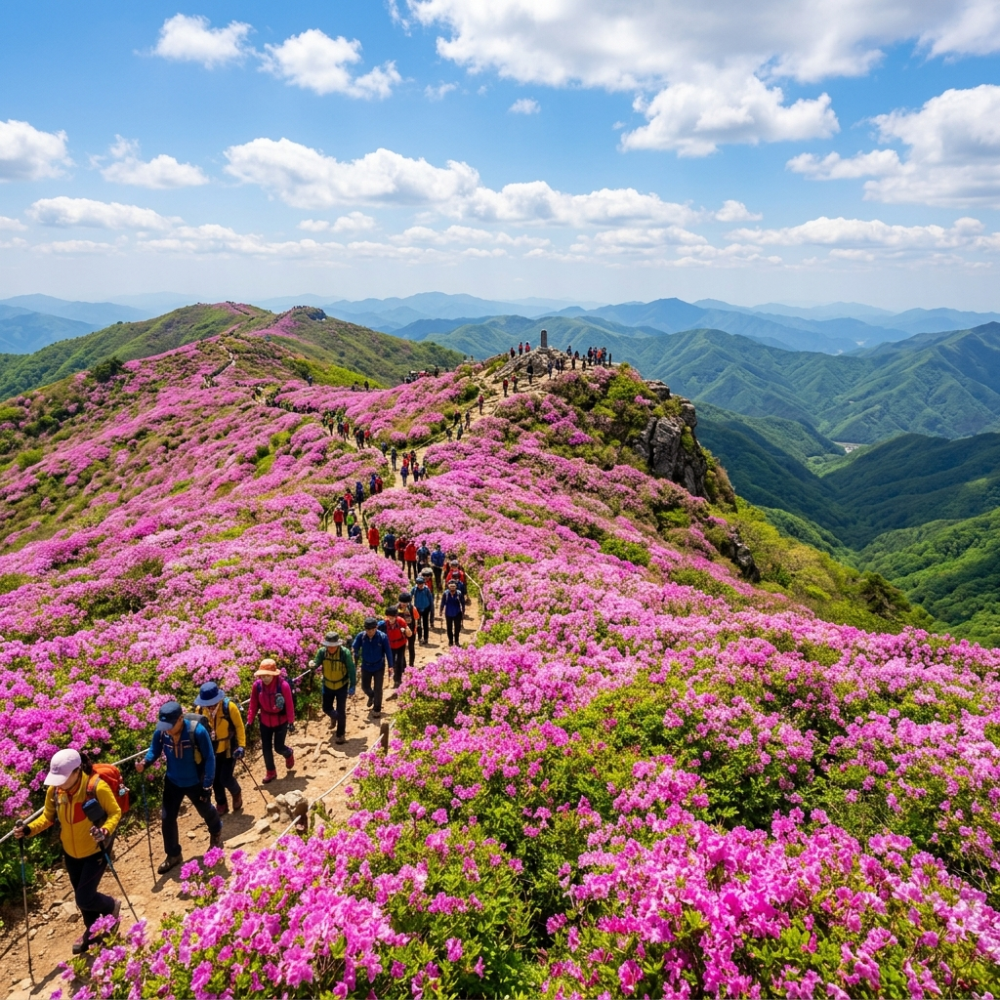
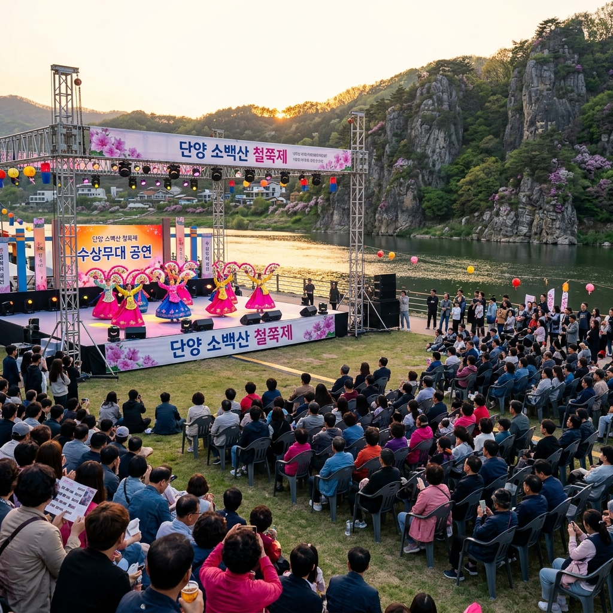
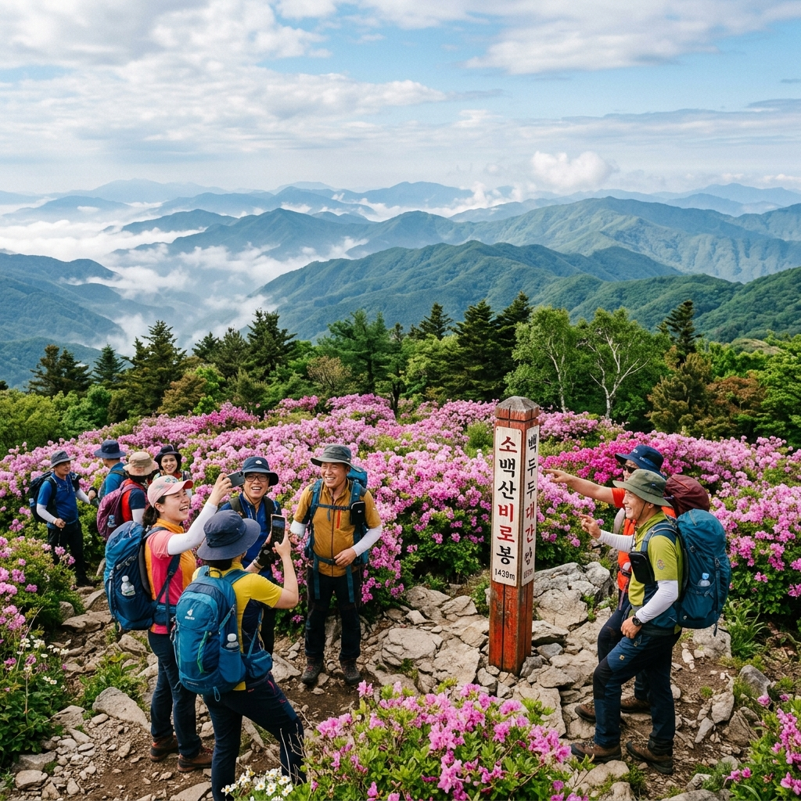

발행일: 2026-05-15 | 카테고리: 충북 단양 국내여행 | 행사일: 2026.05.22~05.24 (D-7)
📌 이 글은?
2026년 5월 22~24일 열리는 단양 소백산 철쭉제를 앞두고, 철쭉 군락지 탐방 코스·등산 루트·단양 먹거리·교통까지 D-7 현장 분석을 정리합니다.
처음 단양을 방문하는 분도 이 글 하나면 충분한 탐방 가이드를 만들었습니다.
| 행사명 | 단양 소백산 철쭉제 2026 |
| 일시 | 2026년 5월 22일(금) ~ 5월 24일(일) |
| 주요 행사장 | 단양읍 수변무대 + 소백산 일원 |
| 입장료 | 무료 |
| 문의 | 043-423-0701 (단양군 관광진흥과) |
| 교통 | 서울 청량리역 → 단양역 (무궁화호 약 2시간 20분) |
소백산 철쭉제는 매년 5월 철쭉 개화 시기에 맞춰 열리는 단양의 대표 봄 축제입니다.
입장료 무료라는 점이 가장 큰 매력이며, 등산과 축제 문화 행사를 동시에 즐길 수 있습니다.
단양읍 수변무대에서는 공연·체험 행사가 열리고, 소백산 비로봉 일대에서는 100만 평이 넘는 철쭉 군락지가 장관을 이룹니다.
소백산 비로봉(1,439m)의 철쭉은 해발고도가 높아 서울 기준 2~3주 늦게 개화합니다.
평년 기준 비로봉 철쭉 개화 절정은 5월 25일~6월 5일 사이입니다. 2026년은 봄이 평년보다 1주일 이상 빠르게 진행되고 있어, 5월 22~24일 축제 기간이 절정 초반부에 해당할 가능성이 높습니다.
완전 만개보다 70~80% 개화 상태가 오히려 싱그러운 초록과 분홍의 대비가 아름다워 사진 촬영에 유리합니다.
비로봉 정상 기온은 5월에도 10°C 이하로 떨어지는 날이 있습니다. 반드시 방풍 재킷을 준비해야 합니다.
축제 개막 직전인 5월 21일(목) 방문하면 주말 인파보다 훨씬 여유롭게 철쭉을 즐길 수 있습니다.

소백산 정상부 철쭉 군락 — 해발 1,439m 고원을 뒤덮은 분홍빛 물결
| 코스명 | 출발지 | 편도 거리 | 소요 시간 | 난이도 | 철쭉 밀도 |
|---|---|---|---|---|---|
| 죽령 코스 | 죽령 주차장 | 약 7.5km | 4~5시간 | 중상 | ★★★★★ |
| 희방사 코스 | 희방사 주차장 | 약 5.8km | 3~4시간 | 중 | ★★★★☆ |
| 비로사 코스 | 비로사 매표소 | 약 6.4km | 3.5~4.5시간 | 중 | ★★★★☆ |
| 도솔봉 코스 | 국망봉 방면 | 약 9.2km | 5~7시간 | 상 | ★★★★★ |
초보 등산객에게는 희방사 코스를 추천합니다. 희방폭포를 지나 정상까지 이어지는 경로로, 경관 변화가 다양해 지루하지 않습니다.
철쭉 밀도가 가장 높은 코스는 죽령 코스입니다. 죽령 능선을 따라 비로봉까지 이어지는 구간은 5월 하순 철쭉 카펫으로 유명합니다.
당일치기 서울 출발이라면 희방사 코스 왕복 기준으로 오전 7시 단양역 도착 → 정오 비로봉 정상 → 오후 3시 하산 → 오후 4시 단양읍 귀환이 타이트하게 가능합니다.
단양읍 수변무대는 남한강변에 위치한 야외 공연장으로, 철쭉제 기간에는 다양한 행사가 진행됩니다.
주요 프로그램으로는 지역 전통 공연(농악·민요), 마늘·마늘빵 체험 부스, 단양 특산물 판매전, 강변 연 날리기 체험 등이 있습니다.
행사 세부 시간표는 축제 개막 1~2일 전 단양군 공식 채널을 통해 발표되므로, 출발 전날 확인을 권합니다.
수변무대 주변 주차장은 축제 기간 무료 개방됩니다. 다만 개막일(22일 금요일) 저녁부터는 주차 공간이 포화 상태가 될 수 있으니 이른 도착을 권합니다.
축제 장소가 강변이라 저녁에는 기온이 급격히 낮아집니다. 겉옷을 반드시 챙겨야 합니다.
| 교통 수단 | 출발지 | 소요 시간 | 비용(편도) | 비고 |
|---|---|---|---|---|
| 기차 ★추천 | 청량리역 | 약 2시간 20분 | 약 12,000원~ | 무궁화호, 단양역 하차 |
| 고속버스 | 동서울터미널 | 약 2시간~2시간 30분 | 약 15,000원~ | 단양버스터미널 하차 |
| 자가용 | 서울 출발 | 약 2시간~2시간 30분 | 고속도로비 약 8,000원 | 중부내륙고속도로 단양IC |
기차를 이용할 경우 단양역에서 소백산 등산 입구까지 택시(약 15분, 약 8,000원) 또는 셔틀버스(축제 기간 운행 확인 필요)를 이용합니다.
자가용을 가져오면 소백산 주차장에서 등산 코스 선택이 자유롭고, 단양 8경 연계 이동도 편리합니다. 축제 기간 혼잡을 고려하면 평일 자가용, 주말 기차+택시 조합이 현실적으로 가장 효율적입니다.

단양 수변무대 개막공연 — 단양강을 배경으로 펼쳐지는 자연 속 무대
단양은 소백산만이 아닙니다. 단양 8경을 등산 전후로 연계하면 하루를 훨씬 풍성하게 보낼 수 있습니다.
당일치기 추천 연계 코스
오전 7시 — 단양 도착. 아침 식사 (단양 마늘 순대국밥 추천)
오전 8시~오후 1시 — 소백산 희방사 코스 등산 + 철쭉 감상
오후 2시 — 하산 후 구인사(천태종 총본산, 소백산 동편) 30분 탐방
오후 3시 — 도담삼봉(단양 8경 중 제1경) 유람선 탑승 (약 30분)
오후 4시 — 석문 또는 사인암(단양 8경) 드라이브 탐방
오후 5시 — 수변무대 철쭉제 축제 현장 구경 + 저녁 식사
오후 7시~8시 — 단양 출발 귀가
단양은 마늘로 유명합니다. 남한강의 풍부한 수량과 소백산의 기후가 만나 단양 마늘은 전국 최고 품질을 자랑합니다.
이 마늘을 활용한 향토 음식이 단양 여행의 또 다른 즐거움입니다.
| 음식 | 특징 | 가격대 | 위치 |
|---|---|---|---|
| 마늘 돼지갈비 | 단양 마늘 양념 갈비, 고소하고 깊은 맛 | 1인 약 18,000원~ | 단양읍 식당가 |
| 시래기 정식 | 소백산 무청 시래기 반찬 중심 한정식 | 1인 약 12,000원~ | 등산로 주변 식당 |
| 마늘 빵 | 흑마늘 크림이 들어간 단양 명물 빵 | 2,500~3,500원 | 단양 관광지 인근 베이커리 |
| 민물매운탕 | 남한강 쏘가리·메기 활어 매운탕 | 2인 약 40,000원~ | 수변무대 인근 강가 식당 |
소백산은 정상 기온이 낮고 바람이 강한 산입니다. 5월이라도 방심하면 저체온증 위험이 있습니다.
필수 준비물
□ 방풍 재킷 (비로봉 정상 기온 5~15°C)
□ 등산화 (비 온 뒤 등산로가 질퍽해짐)
□ 물 최소 1.5L (편의점이 없는 구간 많음)
□ 행동식 (에너지바·과일·김밥 등)
□ 자외선 차단제 + 선글라스 (정상 부근 자외선 강함)
□ 스틱 1쌍 (하산 시 무릎 보호)
선택 준비물
□ 방수 판초 우의 (5월 갑작스러운 소나기 대비)
□ 귀마개 또는 털모자 (정상 바람 강함)
□ 무릎 보호대 (장거리 코스 선택 시)
철쭉제 기간인 5월 22~24일은 단양 전역이 성수기에 들어갑니다.
비로봉 등산로는 주말(23~24일) 오전 9시~10시에 입산 인파가 폭주합니다. 상행 등산로에서 줄이 생길 수 있을 정도입니다.
혼잡을 피하는 가장 좋은 방법은 이른 아침 입산입니다. 오전 6~7시 출발하면 정상을 한적하게 즐길 수 있습니다.
단양읍 숙박은 축제 기간 2~3주 전에 마감되는 곳이 많습니다. 이 글을 읽는 시점(D-7)에서 숙박 예약이 아직이라면 즉시 확인이 필요합니다.
숙박 대안으로 충주(차로 30분)나 영주(차로 40분) 방면 숙소를 베이스캠프로 삼는 것도 방법입니다.

단양 도담삼봉 — 남한강 위로 솟은 세 개의 기암괴석, 단양 8경 중 제1경
| 숙박 유형 | 위치 | 가격대 (1박) | 장단점 |
|---|---|---|---|
| 단양읍내 모텔·게스트하우스 | 단양버스터미널 인근 | 5~8만원 | 접근성 최고, 시설 노후 가능 |
| 소백산 인근 펜션 | 영춘·가곡면 일대 | 10~20만원 | 자연경관 좋음, 자가용 필수 |
| 글램핑 | 단양 일원 | 15~25만원 | 분위기 좋음, 5월 성수기 조기 마감 |
| 충주 숙박 + 드라이브 | 충주시 | 6~12만원 | 단양까지 30분, 숙박 선택지 넓음 |
📋 D-7 지금 당장 해야 할 것
□ 단양 숙박 잔여 여부 즉시 확인 및 예약
□ 청량리역 → 단양역 기차 예매 (코레일 앱)
□ 등산 코스 결정 (초보: 희방사 / 중급: 죽령)
□ 등산 장비 준비: 방풍 재킷·등산화·물 1.5L 이상
□ 5월 22일 날씨 예보 확인 (강수 확률 체크)
□ 단양 먹거리 목록 미리 정리 (마늘 돼지갈비 맛집 검색)
□ 축제 문의: 043-423-0701
📍 기본 정보
행사명: 단양 소백산 철쭉제 2026
일시: 2026년 5월 22일(금) ~ 5월 24일(일)
장소: 단양읍 수변무대 + 소백산 일원
입장료: 무료
교통: 청량리역 → 단양역 (무궁화호 약 2시간 20분)
문의: 043-423-0701